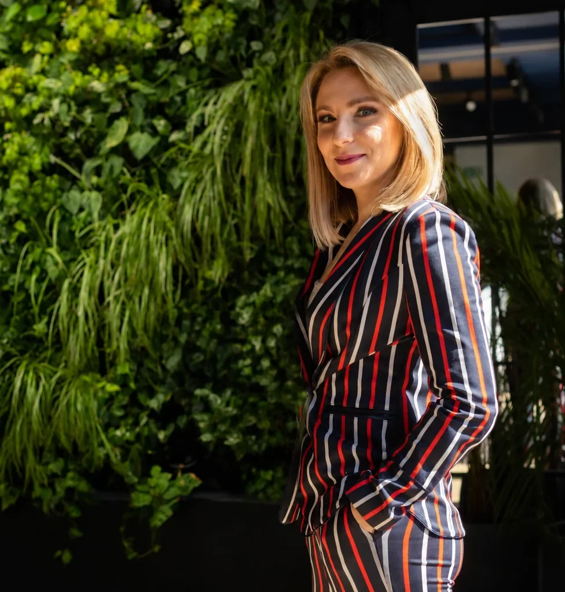
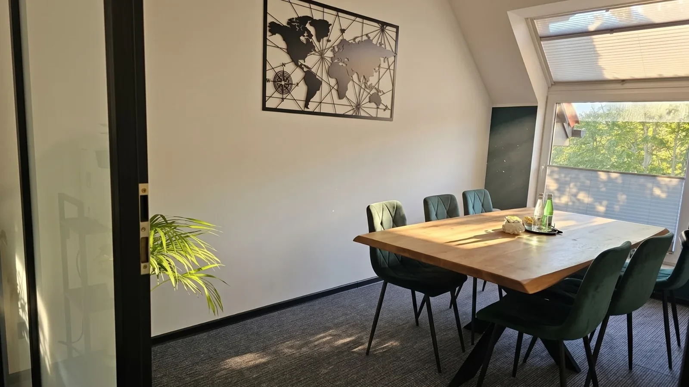
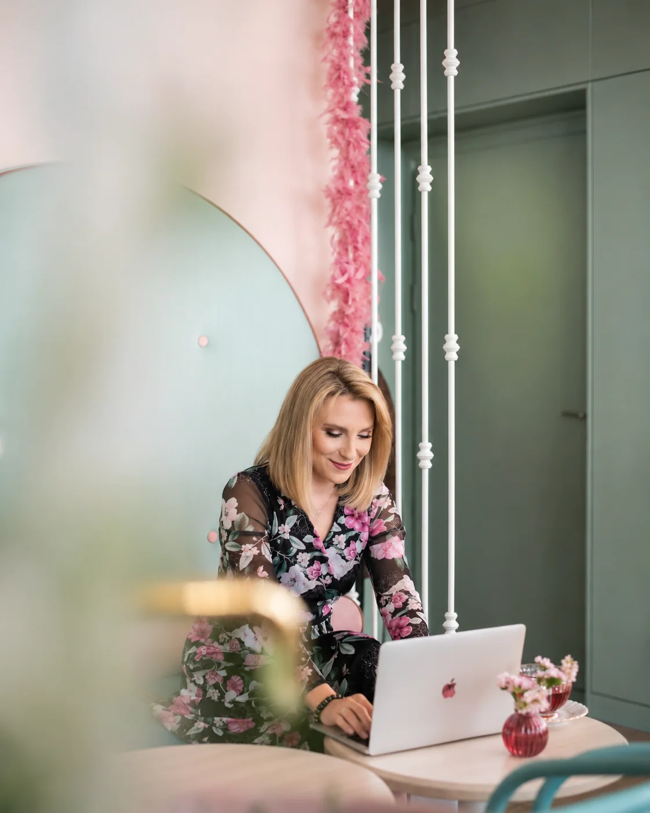

Rozważasz rozwód
Chcesz dowiedzieć się, jak wygląda postępowanie, jakie żądania rozważyć i czego można się spodziewać.
Zanim podejmiesz ważne decyzje, omów z adwokatem swoją sytuację, kwestie dotyczące dzieci, mieszkania, majątku i możliwego przebiegu postępowania.

Konsultacja może pomóc Ci uporządkować pytania i poznać możliwe rozwiązania, niezależnie od tego, na jakim etapie jesteś.
Chcesz dowiedzieć się, jak wygląda postępowanie, jakie żądania rozważyć i czego można się spodziewać.
Potrzebujesz omówić opiekę, kontakty, władzę rodzicielską i alimenty.
Nie wiesz, co rozwód oznacza dla wspólnego domu, zobowiązań czy oszczędności.
Zastanawiasz się, które informacje i dowody mogą być przydatne w sprawie.
Różnicie się co do warunków rozstania, dzieci, alimentów lub kwestii winy.
Potrzebujesz omówić treść pozwu, terminy oraz możliwe działania procesowe.
Nie każda sprawa wymaga tych samych przygotowań. Ta lista pomoże Ci uporządkować najważniejsze pytania.
Chcesz omówić, które zagadnienia mają znaczenie w Twojej sytuacji?
Umów konsultację ↗Przemyśl ich codzienne potrzeby, sposób opieki, kontakty i możliwe ustalenia dotyczące władzy rodzicielskiej.
Przygotuj realistyczne zestawienie wydatków na dzieci i dostępne informacje o sytuacji finansowej rodziny.
Sprawdź, na jakiej podstawie korzystacie z mieszkania i jakie konsekwencje mogą mieć planowane zmiany miejsca zamieszkania.
Zidentyfikuj główne składniki majątku wspólnego i osobistego, w tym oszczędności, nieruchomości i udziały w firmach.
Uporządkuj informacje o kredytach, pożyczkach i pozostałych zobowiązaniach. Sam rozwód nie zwalnia automatycznie z długu wobec banku.
Rozważ, czy żądanie orzekania o winie jest uzasadnione i jakie może mieć znaczenie dla przebiegu sprawy oraz obowiązku alimentacyjnego między małżonkami.
Przygotuj listę dokumentów i informacji, którymi legalnie dysponujesz. Nie pozyskuj danych z naruszeniem prawa lub prywatności innych osób.

Nie musisz przychodzić z kompletem dokumentów ani gotowym planem działania. Podczas konsultacji omówimy najważniejsze kwestie prawne i ustalimy, co wymaga dalszego wyjaśnienia.
To płatne spotkanie z adwokatem poświęcone Twojej sytuacji prawnej. Jego celem jest uporządkowanie najważniejszych zagadnień i omówienie możliwych dalszych kroków.
Konsultacja stanowi odrębną usługę. Nie musisz zlecać prowadzenia postępowania, a ewentualna dalsza współpraca wymaga osobnych ustaleń.
Zaznacz tematy, które dotyczą Twojej sytuacji, a strona przygotuje listę zagadnień do omówienia podczas 120-minutowego spotkania.

Konsultacja to przestrzeń na spokojne przedstawienie problemu i poznanie możliwych rozwiązań prawnych.
Pomagam osobom, które dopiero rozważają rozwód, oraz tym, wobec których postępowanie zostało już wszczęte. Rozmowa może dotyczyć także alimentów, kwestii dzieci i sytuacji majątkowej.
Moim celem jest przedstawienie informacji prawnych istotnych dla Twoich okoliczności i omówienie strategii — zarówno co do procesu, jak i codziennego postępowania na obecnym etapie życiowym. Bez mitów, bez straszenia, bez obiecywania gruszek na wierzbie — ze spokojną głową i rozwagą.
Tak. Nie musisz podejmować ostatecznej decyzji przed rozmową. Możemy omówić możliwe rozwiązania prawne i konsekwencje różnych działań.
Nie. Warto przygotować listę pytań i dostępne podstawowe dokumenty. Jeżeli potrzebna będzie pogłębiona analiza dokumentacji, kancelaria uzgodni jej zakres i warunki odrębnie.
Tak, jeśli zagadnienia te dotyczą Twojej sprawy. Ocena wysokości alimentów wymaga uwzględnienia indywidualnych okoliczności, a nie wyłącznie zastosowania prostego przelicznika.
Możesz zgłosić sprawę do konsultacji. Poinformuj o doręczeniu pozwu i ewentualnym terminie wskazanym przez sąd. Sama prośba o konsultację nie wstrzymuje terminów procesowych.
Nie. Konsultacja jest samodzielną usługą. Ewentualne zlecenie prowadzenia sprawy wymaga odrębnych ustaleń.
Tak. Konsultacja może odbyć się w kancelarii w Gdańsku albo online. Formę spotkania uzgodnimy przy rezerwacji.
Adwokata obowiązuje tajemnica zawodowa zgodnie z przepisami prawa i zasadami wykonywania zawodu. Szczegółowe dokumenty i informacje należy przekazywać kanałem uzgodnionym z kancelarią.
Spotkanie trwa 120 minut. W tym czasie ustalimy priorytety i omówimy najważniejsze zagadnienia. Jeśli sprawa wymaga szczegółowej analizy wielu dokumentów, jej zakres i ewentualne dalsze czynności ustalimy osobno.
Nie. Możesz zasięgnąć indywidualnej porady prawnej przed poinformowaniem małżonka o swoich planach. Omówimy również zgodne z prawem przygotowanie dokumentów i dowodów.
Tak. Po wstępnej weryfikacji sprawy kancelaria przekaże listę dokumentów, które należy lub warto przygotować. Jeżeli nie masz wszystkich dokumentów, nie musi to uniemożliwiać spotkania.
Tak. Możemy omówić praktyczne i prawne kwestie związane z opieką nad zwierzęciem po rozstaniu oraz możliwości zawarcia porozumienia.
Podczas spotkania możemy przeanalizować Twoją sytuację finansową, obowiązki małżonków i ewentualne roszczenia. Dostępne rozwiązania zależą od konkretnych okoliczności.
Tak. Omówimy, jakie informacje i dowody mogą mieć znaczenie, jak je uporządkować i jak pozyskiwać je zgodnie z prawem, bez naruszania cudzej prywatności.
Nie. Konsultacja nie zobowiązuje do wszczęcia postępowania ani do zlecenia kancelarii dalszych czynności. Zachęcamy do spokojnego przemyślenia decyzji.
Możesz zacząć od rozmowy z adwokatem o swojej sytuacji.
Krótkie materiały, które pomogą uporządkować pytania przed konsultacją. Jeśli chcesz przeanalizować własną sytuację, umów indywidualne spotkanie.
Co może być przydatne przed pierwszą rozmową z adwokatem.
Najważniejsze zagadnienia dotyczące wspólnych dzieci.
O czym warto pamiętać przed podjęciem decyzji.
To propozycje tematów przyszłych artykułów. Po opublikowaniu wpisów dodaj do kart prawdziwe odnośniki.
Napisz lub zadzwoń do kancelarii. Przed przyjęciem sprawy zweryfikujemy możliwość udzielenia pomocy, a następnie przedstawimy dostępne terminy, cenę, niezbędne dokumenty i przebieg spotkania.
Na pierwszym etapie nie przesyłaj szczegółowych opisów konfliktu, danych wrażliwych ani dokumentów zawierających poufne informacje. Strona nie zawiera formularza zbierającego takie dane.